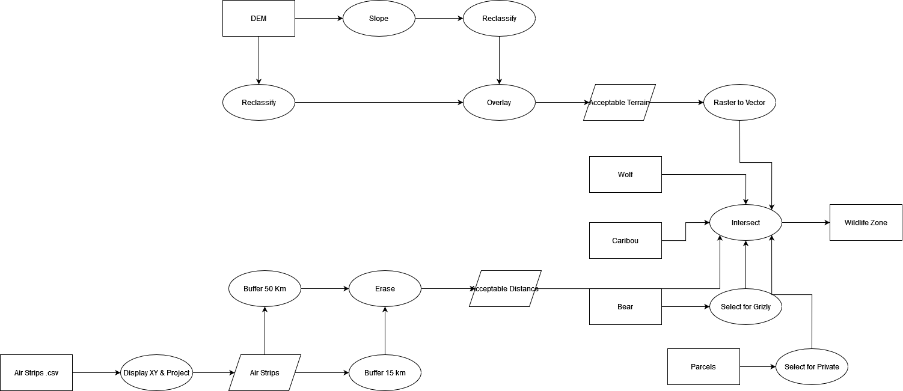
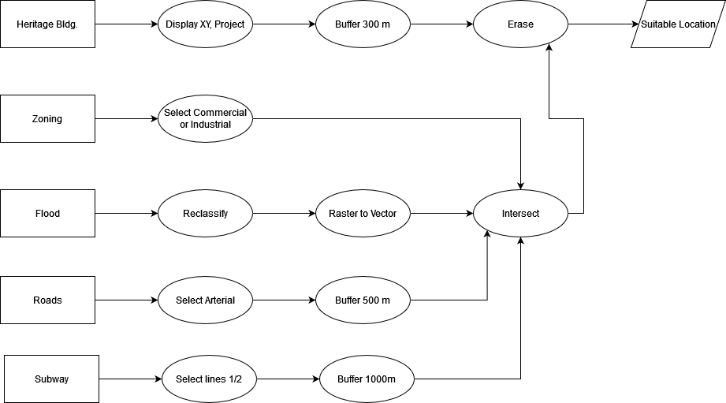
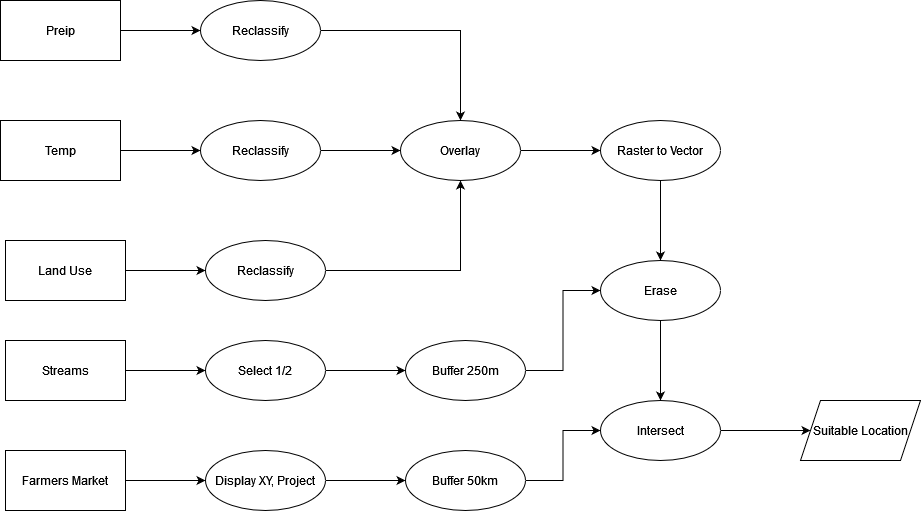

GEOS 270 Final Exam
This is the final exam for student number: 0. Confirm your student number is correct before proceeding. Do not complete someone else’s exam.
Instructions
The exam is “open book”, you can reference any resources from the class or online to work through the questions. However, all the work MUST be in your own words. You can not copy from online resources or classmates. Plagiarism will be taken very seriously and could result in failing the exam.
The exam will be open for 24 hours, but it shouldn’t take you more than a few hours to complete. You only have one attempt to take the exam during the exam. The exam has three parts: a written response section, a flowchart section, and a mixed questions. You will save each part as a separate document and upload it to exam page on canvas.
If you experience extenuating circumstances during the exam you may reach out to me, but I will not be answering any questions related to the content of the exam during the exam period. Do not contact your TAs about the exam, they will not be answering any questions during the exam period.
Good Luck!
Written Responses
This section consists of an essay and a handful of short answer questions.
- Type up your essay and short answers response and save them in one .pdf document . Name the file: StudentNumber_WrittenRespones.pdf
- If your student number were “10011001”, your file would be named: 10011001_WrittenRespones.pdf
Essay
Pick one of the essay prompts below and respond to it. Make sure to list the specify which essay you are choosing to answer. Feel free to include diagrams/figures/sketches if applicable, but do not feel obligated to do so.
Coordinate Systems
In Module 2, you created a map that looked something like the image below. Discuss the steps necessary to create a 2D representation of the earth (or a specific region of the earth) in a GIS and what are the simplifications made at each step? Discuss the considerations (e.g., scale) that must be taken into account when choosing an appropriate map projection? What are the differences between coordinate systems show in this map and when should (or shouldn’t) we use them?

Answer
Earth > Geoid > Datum > Geographic Coordinate System (Lat/Lon) > Projection
- Geoid Smooths out topography, measure by satellites, models large scale (eg. continental) undulations of earths crust due to gravity differentials ( on the order of +/-180m)
- Datum - Oblate Speheroid fit to the geoid, Smooths out remaining elevation differences to create an 3D semi-spherical shape symmetric around the equator (equatorial bulge due to centrifugal force). Fit globally (to center of earth) or locally (surface of earth)
Geographic Coordinate System (GCS) - Assign a GCS (eg. Latitude & Longitude) to the datum * Relates locations on the earth’s surface to the datum(spheroid) * Latitude & Longitude is a spherical coordinate system that uses degrees from the equator & prime meridian * Lat - equator +-90 * Lon - prime meridian +-180 * Not the only option, could use radians, but degrees are a bit easier to understand (an especially astute point if anyone mentions this)
Projected Coordinate System - Transforms the 3D GCS so that it can be displayed more effectively on a 2D map.
- Key difference is a 2D vs. 3D coordinate system
- Transforms the 3D GCS so that it can be displayed more effectively on a 2D map
- ‘Correcting’ for curvature of the earth
- Any calculations you do in a Lat/Lon will be in degrees and therefore meaningless (area, distance, etc).
- A map is a 2D entity so when you map unprotected data everything looks ‘spaghettified’ at the poles because we are not accounting for the convergence of meridians (lines of longitude) at the poles.
- All projections induce error, but in different ways some more/some less. Must consider the scale of the map and the application of the map.
- Scale:
- Small scale maps = large area, large scale maps = small area
- Counter to common understanding of term and easy to mix up. Don’t knock them too hard if the mix them up as long as they’re logically consistent w/ the ideas.
- Types:
- Cylindrical projections are generally best suited for small scale (i.e. global) applications.
- Conic are well suited for hemispheric and regional applications in the mid-latitudes (eg. Mapping Canada or BC)
- Azimuthal are good for the poles or a select few other applications (e.g. airports)
- Didn’t spend much time on these - they should mention for full credit, but don’t knock too much if they can’t explain it
- Universal Transverse Mercator are good for large scale applications (eg. city of Vancouver)
- Application
- Calculating area, must use an equal area projection for most scales, UTM is fine for large scale (eg. a city) application.
- For small scale - if we need to follow bearings (navigation) or need shape to be maintained go with a conformal projection (eg. Mercator)
- When we are only concerned for aesthetics, we can go with a compromise projection.
The Map: * WGS 1984 - not projected, should never use for a 2D map * Web Mercator - cylindrical conformal projection. Okay for global applications (eg. google maps) but causes sever distortions away from tangent line (the equator) * Lambert Conformal Conic - does a good job for Canada maintaining shape and minimizing most distortion, but not an equal area so won’t give the best area calculations. * Albers Equal Area - visually not quit as nice as Lambert but gives true area calculations
Data Models
In Module 4, you assessed the relationship between housing cost and vegetation cover and created a map that looked something like the image below. Discuss the key differences between raster and vector data; what type(s) of phenomena they are best suited to represent, and what does the term ‘resolution’ describe in the context of these data models, and how is resolution related to, and different from, the concept of scale? How did you make use of both raster and vector data to investigate the relationship between housing cost and vegetation cover in Vancouver?

Answer
Raster
How - Grid of equally sized/spaced cell
Attributes: only one value per cell
Cell size determines resolution
- Resolution is explicitly defined, unlike vector data where its more ambiguous.
Scale (spatial coverage) determined by # of cells (columns x rows)
Can stack raster bands to add multiple attribute values (eg. RGB image)
Phenomena - Continuous Fields
- Vary across space, every location has a value
- Can work for discrete objects but generally less effective than vector
- Continuous phenomena can have discrete/qualitative values (e.g. land use) or continuous/quantitative values (e.g. temperature)
Computationally efficient for overlays
- Raster math allows for easy calculations, algebraic expressions with layers
Large data volumes, re-projecting can be computationally expensive
Vector
How - Point, Line, or Polygon objects with attributes linked in separate table.
Number of vertices (points composing lines/polygons) determines resolution
- Less explicit than raster
Scale (spatial coverage) determined by bounds (north south/east west extent)
Essentially unlimited number of attributes per object
Phenomena - Discrete Objects
- Clearly defined measurable values
- Can work for continuous phenomena but generally less effective than raster
Efficient querying and lookup of values
Overlays can be computationally expensive for larger layers
Examples - any two are fine as long as they’re correct - some folks will probably try to say things like DEM are vectors (its not!, deduct pts for that)
Scale/resolution discussion: scale is a property of the map/analysis, resolution is a property of the data.
- Resolution will dictate the scale of analysis we can conduct, scale will dictate desired resolution.
- Raster resolution is easier/more straight forward to define > its the cell size - has a significant impact on data volume
- File size increases exponentially with decreasing cell size, and linearly with increasing number of bands.
- Larger files = longer processing times
- Vector resolution is less straightforward > number of vertices in a polygon/line > not typically explicitly defined for a file, unlike cell size
- Still impacts data volume > more vertices = larger file & longer processing times.
Analysis in Module 4
NDVI was raster - used to identify green vegetation areas
Census Data - vector used to give income/housing cost for various areas
- Some folks will probably try to say things like census data are raster. Its not, deduct pts for that!
Two approaches
- 1 zonal stats to “stamp” census data over raster data to get mean NDVI per census block. Quick and easy but gives less info
- 2 reclassify to ID green vegetation then convert NDVI to vector then intersect > summarize > join to get total green veg area per CT. More involved but can also give us a bit more info
Short Answer
You can answer these questions briefly in sentence or bullet point format.
Normalization
What is the data normalization? When/why might you want do it? List two examples from lab where we normalized data and why we needed to do it?
Answer
Normalizing, is the process of dividing one variable by another. It can highlight patterns by calculating rates or ratios and changing units. It is used to account for confounding relationships, Confounding variables can be correlated but do not have to be correlated. Examples from lab: Population density, % income on food, % green space, Kernel density (not strictly speaking normalization, but we’ll count it). - could be other examples I’m forgetting Two examples & explanations necessary for full credit.
Autocorrelation
What is spatial auto-correlation? What are two tools we covered that we can use to create a continuous field from discrete point observations of phenomena that exhibit positive spatial auto-correlation?
Answer
The measure of similarity between objects across space. Positive (clustering) - Negative (dispersed) - near zero (random). It allows us to make some a key assumptions when representing spatial data (eg. spatial inferences) but also violates the key assumptions of many statistical models. An astute answer will mention Tobler’s Law. - Examples - Kernel Density and Inverse Distance Weighting are the key ones I’m looking for - but they could list other examples for partial credit if they give a good explanation. ie, the raster model is predicated on the assumption that a cell is representative of the area it covers (spatial auto correlation) - not a ‘tool’, but if they give a good explanation give partial credit for something like that.
Spatial Patterns
In lecture I contrasted agricultural systems (e.g., a corn field) with natural systems (e.g., a tundra ecosystem) when describing how we measure similarity or dissimilarity across space. What were the terms used to describe similarity or dissimilarity across space? Which one would best describe a corn field and which would better describe a tundra ecosystem and why?
Answer
Heterogeneity: Dissimilarity of phenomena across space. Homogeneity: Clustering of similar phenomena in space. Statistical tests often assumes homogeneity, but the natural world is typically heterogeneity (An astute point for full credit!). Corn - homogenous, Tundra - heterogeneous.
Vector Tools
Compare and contrast the clip and intersect tools. Which of these tools (clip or intersect) did we use to identify the population at risk from a Tsunami in Port Alberni? Could we have used the other tool (clip or intersect) instead?
Answer
Clip - directional, only two inputs, used to cut down input by clip layer. Intersect - non-directional, can take more than two inputs, cuts layers down by spatial overlap and merges attributes. Used intersect, clip would have worked too though because we were only interested in the spatial relationship when identifying the inundation zone.
Raster Tools
Compare and contrast the raster calculator and weighted overlay tools. Which of these tools (raster calculator or weighted overlay) did we use to identify the suitability Tsunami shelters in Port Alberni? Could we have used the other tool (raster calculator or weighted overlay) instead?
Answer
Raster Calculator - Treats layers as variables in equation. Weighted overlay - only for discrete variables, requires explicit definition/classification of inputs. Can do similar things to calculator, but not all that calculator can do. Used weighted overlay, could have used raster calculator instead.
Select by Attribute
The table below contains a list records for different trees in an area. The select by attribute tool can be used to query records in a table. For example, if I needed to find all the maple trees , I could select:Where: Species = Maple
How would you use the select by attribute tool in ArcGIS Pro to select all the dogwood and pine trees over 5 m tall from the table above? Write out the query as it would be structured in the select by attribute tool, you can see the text above for a hint on how to format your answer. How many records would your query return?
| Species | Age | Height |
|---|---|---|
| Dogwood | 5 | 50 |
| Dogwood | 6 | 75 |
| Pine | 20 | 35 |
| Pine | 25 | 45 |
| Oak | 10 | 30 |
| Maple | 35 | 60 |
Answer
Where Species = Pine And Height > 5 OR Species = Dogwood And Height > 5 Returns 3 records Variations are fine but must have proper use of the or If statement is wrong, but number of rows are correct, answer is insufficient give 2 pts. Half credit if they confuse records (rows) with attributes (columns)
How would you use the select by attribute tool in ArcGIS Pro to select all the birch and pine trees over 35 yr old from the table above? Write out the query as it would be structured in the select by attribute tool, you can see the text above for a hint on how to format your answer. How many records would your query return?
| Species | Age | Height |
|---|---|---|
| Birch | 5 | 50 |
| Birch | 6 | 75 |
| Pine | 20 | 35 |
| Pine | 25 | 45 |
| Oak | 10 | 30 |
| Maple | 35 | 60 |
Answer
Where Species = Pine And Age > 35 OR Species = Birch And Age > 35 Returns 3 records Variations are fine but must have proper use of the or If statement is wrong, but number of rows are correct, answer is insufficient give 2 pts. Half credit if they confuse records (rows) with attributes (columns)
Resolution vs. File Size
You have two raster images that cover the exact same area (same extent). Raster image ‘A’ is a DEM (one band) and a cell size of 100 m. Raster image ‘B’ is an RGB color image (three bands) and a cell size of 25 m. If raster A has a file size of 10 mb (megabytes), what is the approximate file size of layer B in mb?“,
Answer
480 mb
File size is linearly dependent on the number of bans and exponentially dependent upon the cell size
A 100m cell size, B 25 m cell size
B is 4x smaller than A: 100/25 = 4
One band of B is: 42 = 16 times lager; 16*10 mb = 160 mb
Since B has 3 bands: 160 mb * 3 bands = 480 mb
You have two raster images that cover the exact same area (same extent). Raster image ‘A’ is a DEM (one band) and a cell size of 100 m. Raster image ‘B’ is an RGB color image (three bands) and a cell size of 50 m. If raster A has a file size of 10 mb (megabytes), what is the approximate file size of layer B in mb?“,
Answer
File size is linearly dependent on the number of bans and exponentially dependent upon the cell size
120 mb
File size is linearly dependent on the number of bans and exponentially dependent upon the cell size
A 100m cell size, B 50 m cell size
B is 4x smaller than A: 100/50 = 2
One band of B is: 22 = 4 times lager; 4*10 mb = 40 mb
Since B has 3 bands: 40 mb * 3 bands = 120 mb
Flowchart
Create a flow chart outlining how you would use GIS to answer the following prompt. Either draw your flowchart by hand, use this online tool, or use another software package (eg. power point, etc.) and upload it here. Use appropriate symbology to differentiate between layers (inputs/ intermediate layers /outputs) and processes and use arrows to connect them. You can include a written response as well to further explain steps/choices in your model if you wish.
- Save the file as either a .pdf, png, or jpg and name it as follows: StudentNumber_Flowchart.pdf
- If your student number were “10011001”, your file would be named: 10011001_FlowChart.pdf, 10011001_FlowChart.png, or 10011001_FlowChart.jpg, depending on the file type you chose.
- Make sure to upload the flowchart as a separate file. Do not include it in your written answers or it will not be marked.
Locations for an Ecotourism Resort
An investor wishes to develop a new eco-tourism resort for wildlife sightseeing in Northern BC. You have been hired as a GIS consultant to identify several candidate areas for building the resort. The ideal location must meet the following criteria:
- Within 50 km of an air strip, but more than 15 km from one.
- Within wolf, grizzly bear, and caribou’s geographic ranges.
- On privately owned land (i.e. not First Nations or Government).
- Within low slope areas (slope < 5%).
- Below 2000m elevation.
You have the following data to work with. Create a flowchart to show how you would go about identifying potential resort locations.
| Dataset | Data Type | File type | Coordinate System | Attributes |
|---|---|---|---|---|
| Airstrips | Points | .csv | WGS 1984 | Locations of existing air strips |
| DEM | Raster | .tif | BC Albers Equal Area | Elevation |
| Wolf | Polygon | .shp | BC Albers Equal Area | Wolf Population Range |
| Bear | Polygon | .shp | BC Albers Equal Area | Grizzly Population RangeBlack Bear Population Range |
| Caribou | Polygon | .shp | BC Albers Equal Area | Caribou Population Range |
| Land Parcels | Polygon | .shp | BC Albers Equal Area | Land Ownership Type(First Nations / Government / Private) |
Answer

Locations for a New Blue Jays Stadium
The Toronto Blue Jays are considering replacing the Rogers Centre with a new stadium. You have been hired by the city of Toronto to identify candidate sites for the new Blue Jays stadium. The ideal location must meet the following criteria:
- On land zoned for commercial or industrial development.
- At least 300 m away from any heritage buildings.
- Within 1000 m of a subway stop served by Line 1 or 2.
- Within 500 m of an arterial roadway.
- Outside of flood-prone areas (flood probability < 10%).
You have the following data to work with. Create a flowchart to show how you would go about identifying potential stadium locations.
| Dataset | Data Type | File type | Coordinate System | Attributes |
|---|---|---|---|---|
| Zoning | Polygon | .shp | UTM Zone 17 N | Zoning Class(Residential / Commercial / Industrial / etc.) |
| Heritage buildings | Points | .csv | WGS 1984 | Age / Address / Owner |
| Subway stops | Points | .shp | UTM Zone 17 N | Line(1/2/3/4) |
| Roads | Line | .shp | UTM Zone 17 N | Type(Arterial / Highway / Street / Alleyway) |
| Flood probability | Raster | .tif | UTM Zone 17 N | Annual flood probability (0-100%) |
Answer

Locations for a Cherry Orchard
You have been hired as a GIS consultant to identify the best locations in BC to start a new organic cherry orchard. The ideal location must meet the following criteria:
- Be on land already used for agriculture.
- Precipitation must be greater than 500 mm/year but less than 1500 mm/year.
- Mean winter temperature must be less than 4 degrees but greater than -10 degrees.
- Greater than 250 m away from First or Second order streams.
- Within 50 km of a farmers market.
You have the following data to work with. Create a flowchart to show how you would go about identifying potential orchard locations.
| Dataset | Data Type | File type | Coordinate System | Attributes |
|---|---|---|---|---|
| Precipitation | Raster | .tiff | BC Albers Equal Area | Mean Annual Precipitation |
| Temperature | Raster | .tiff | BC Albers Equal Area | Mean Winter Temperature |
| LandUse | Raster | .tiff | BC Albers Equal Area | Land Use Category,(Agriculture,Forest,Urban,Water,Grassland) |
| Farmers Markets | Point | .csv | WGS 1984 | Name |
| Streams | Line | .shp | BC Albers Equal Area | Order(First,Second,Third,etc) |
Answer

Mixed Questions
For these questions, download the answer sheet for your exam, which can be found here.
- It is very important make sure the file is named and formatted properly before you upload it.
- It should be formatted as follows: StudentNumber_AnswerSheet.csv .
- If your student number were “10011001”, your file would be named: 10011001_AnswerSheet.csv
- It should be formatted as follows: StudentNumber_AnswerSheet.csv .
- Do not upload the answer sheet as a .numbers, .xls, or any other type of file. Only upload a .csv file for your answer sheet.
- Canvas will convert .numbers, .xls, etc to a .pdf and which cannot be graded automatically.
- Answer sheets that cannot be graded automatically will incur a significant penalty.
- Canvas will convert .numbers, .xls, etc to a .pdf and which cannot be graded automatically.
- The answer sheet file is already named and formatted properly for you, but if you accidentally save in a different format need help exporting a .csv file, you can refer to the following instructions:
Matching
Match the numbered items to the values from the answer bank. Some answers may be used more than once. Only type the letter corresponding to you choice on your answer sheet. Do not type out the full word, only type the letter corresponding to the answer. Answers are not case sensitive.
1
Match the following data to their corresponding measurement scale:
Answer Bank: a Nominal b Ordinal c Ratio
1.0
Colors1.1
Tree Species1.2
Dog Size (Small/Medium/Large)1.3
Temperature (Kelvin)1.4
Dog Size (Small/Medium/Large)1.5
Tree Species1.6
Monthly Income1.7
Letter Grade (e.g. A/B/C)
Fill in the Blanks
Enter the words or phrases that best complete the statement. Blanks are labelled with with an numeric code in brackets (e.g., [11.1]) which has a corresponding slot in your answer sheet. Spelling does not need to be exact, but make sure to type out acronyms/abbreviations. For example, if the answer is Geographic Information Science but you entered GIS, your answer will be marked as incorrect.
2
The [ 2.0 ] arises when we aggregate individual data values into larger [ 2.1 ] with arbitrary boundaries.
3
[ 3.0 ] is a technique that assigns spatial [ 3.1 ] to text-based descriptions of locations (eg. street addresses).
4
Ptolemy’s Geographia is the first known example of a(n) [ 4.0 ]. It consisted of eight volumes and a [ 4.1 ] world map.
5
Spatial [ 5.0 ] is the process of estimating the values between point observations to create a continuous surface. A common method known as [ 5.1 ] uses a function to estimate cell values based on their proximity to a set of known point observations.
6
An attribute [ 6.0 ] contains non-spatial data, that is linked to spatial data using an [ 6.1 ].
7
NDVI is an index derived from satellite [ 7.0 ] that can be used to gauge the health/density of [ 7.1 ].
8
Random sampling is a/an [ 8.0 ] method for collecting spatial information. Stratified random sampling and cluster sampling are [ 8.1 ] methods for collecting spatial information that are designed to help address some of the downsides of random sampling.
9
[ 9.0 ] is the process of assigning spatial [ 9.1 ] to images like scanned historical maps.
10
[ 10.0 ] is a branch of [ 10.1 ] that deals with the nature of right and wrong.
11
Resolution is a property of your [ 11.0 ], scale is a property of your [ 11.1 ].
12
Metadata is [ 12.0 ] about [ 12.1 ].
Multiple Choice
Type the letter corresponding to you choice on your answer sheet. Do not type out the full word, only type the letter corresponding to the answer. Answers are not case sensitive.
13.0
This type of analysis lets us look at the relationship one variable has with another.
- a R2 Scoring
- b Line Plotting
- c Linear Regression
- d Random Forest
- e Natural Breaks Classification
14.0
This metric gives us a sense of the dispersion in a data set, but it is not influenced by outliers.
- a Range
- b Standard Deviation
- c Inter-Quartile Range
- d Dispersion Index
- e Mean
15.0
Map Rock is a 12,000-year stone engraving that that shows a map of which river?
- a Dyje River
- b Murray Darling River
- c Snake River
- d Nile River
- e Fraser River
16.0
This issue arises when we assume we can take data presented in aggregate and aggregate it again at a higher level.
- a Modifiable Aerial Unit Problem
- b Ecological Fallacy
- c Atomistic Fallacy
- d Extrapolation Error
- e Aggregation Error
17.0
These chart/plots are best suited for showing the distribution of a continuous variable:
- a Scatter Plots
- b Bar Charts
- c Histograms
- d Box Plots
- e Line Charts
18.0
These chart/plots are best suited for showing the relationship between two variables:
- a Histograms
- b Bar Charts
- c Scatter Plots
- d Box Plots
- e Line Charts
19.0
These chart/plots are best suited for showing the frequency distribution of a discrete variable
- a Histograms
- b Scatter Plots
- c Bar Charts
- d Box Plots
- e Line Charts
20.0
When making a map of global population density, you should use this type of projection to ensure accurate calculations:
- a Equidistant Azimuthal
- b Conformal Conic
- c Equal Area
- d Universal Transverse Mercator
- e Conformal Cylindrical
21.0
Dr. John Snow’s analysis of the 1854 cholera outbreak in London was a foundational study in the field of:
- a Cartography
- b Epistemology
- c Epidemiology
- d Ecology
- e GIS
True False
Type the letter corresponding to you choice on your answer sheet. Do not type out the full word, only type the letter corresponding to the answer. Answers are not case sensitive.
22.0
Cartography originated in Europe.
- a False
- b True
23.0
The first computer based geographic information system was invented in the United States.
- a False
- b True
24.0
Neural Networks are a type of unsupervised classification method.
- a False
- b True
25.0
K-means is a type of unsupervised classification method.
- a True
- b False
26.0
Box plots are well suited for looking at the spread of values within different classes.
- a True
- b False
27.0
Everything is related to everything else, but farther things are more closely related than nearer things.
- a False
- b True
28.0
Tobler’s law applies to spatial patterns, but it does not apply to temporal patterns.
- a False
- b True